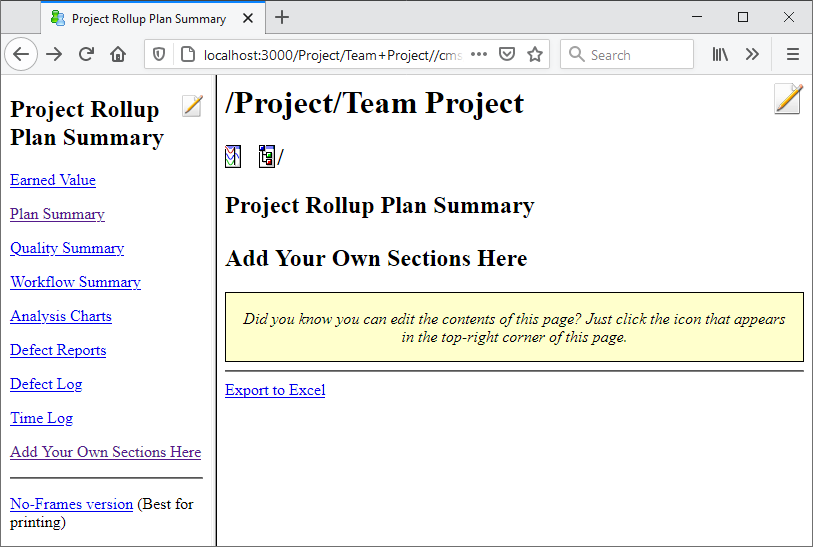
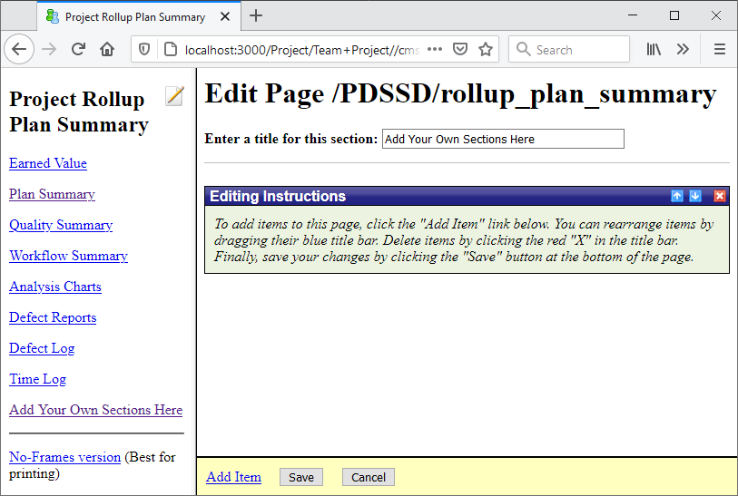

The Process Dashboard contains a powerful editor for defining custom process forms and reports. This editor makes it possible to customize the forms for a process directly in you web browser.
To access this editor, you must first create a team project according to the steps described in the Create a Team Project help topic. Then in the main Team Dashboard window, select the project from the tree on the left, and click the first item in the list on the right to open the team Rollup Plan Summary.
The Team Project Plan Summary is divided horizontally into two panes: a navigation pane on the left, and a detail pane on the right.

Each pane contains an icon in the top-right corner ( )
that you can click to edit the contents.
)
that you can click to edit the contents.

While editing, you can add items to the page by clicking the Add Item link at the bottom, delete items by clicking the red X in their top-right corner, and rearrange items by dragging their title bar. Many items allow you to select a list of process metrics to display; simply type part of a metric name, and the field will show matching metrics. If you are completely uncertain about the name of a particular metric, just type a space into the empty text field to see the complete list of metrics that are available for that type of item. When you are done editing, remember to click the Save button at the bottom of the page.
The custom forms editor makes it extremely simple for team leaders to define the forms and reports they need to manage a project. Of course, process mentors need access to this functionality as well, but may not already have a team project at their disposal - particularly when initially tailoring the dashboard for use within their organization. As a result, process mentors will need to create a temporary team project in their dashboard, and set it up using the Team Project Setup Wizard, before they can use this editor. Once the organization begins its first real project, this temporary project can be deleted.
The Process Dashboard does not currently perform any configuration management of the forms created using this editor. As a result, an organizational process mentor will almost certainly want to perform this task on their own.
The definition of a custom form is saved as a single XML file. You can find this file under the cms subdirectory of the folder where team dashboard configuration data is stored. For example, if you asked the installer to place team configuration data in the T:\team\teaminstance directory, custom form definitions will be saved in the T:\team\teaminstance\cms directory. If you cannot recall where you asked the installer to place team configuration data, open the Team Dashboard, choose "Help → About Process Dashboard," and click on the Configuration tab.
Currently, a particular dashboard dataset will use a single definition of a custom form for each metrics collection framework; this definition will be shared by all team projects within that dashboard dataset using that metrics collection framework.
Custom form definitions can be copied from one dashboard dataset to another, and shared between individuals, simply by copying the contents of this cms directory. In particular, if a process mentor has created forms for use by the organization, they can give those form definitions to a project team by copying the cms directory into that team's configuration data directory.
Finally, it is important to realize that the forms you create using this tool are specific to a particular metrics collection framework. If you create more than one custom metrics collection framework, it will be necessary to create a plan summary form for each one.